This presentation will cover creating a basic Jenkins setup using freestyle and pipeline jobs. It includes a basic introduction to Docker and demonstrates how to simplify Jenkins management with existing Python tools and modules. You will learn how to create, delete, and reconfigure jobs, as well as explore other Jenkins-related features. Additionally, I will showcase low-level Python features that are useful in various applications. Please ensure Docker is installed and working before starting this demo. This presentation assumes the reader has at least a basic understanding of Jenkins and Docker. Please ensure Docker is installed and working before starting this demo.
Refer to this document to get more details on Docker installation: docker installation.
Refer to below documentation to get more details on Jenkins but this article should contain everything to run this demo by following the steps and by using resources added in this article.
This tutorial will be based on Jenkins on Docker and it will slightly differ from the examples mentioned in referred links. The point of this tutorial is to show how to create a basic setup and manage it with Python.
Ensure Docker is installed and running (Docker installation). This project was prepared on Ubuntu 22.04, with Docker running as a service.
Jenkins can be deployed in few different ways as described in Jenkins setup section but here I am going to use Docker because of the following reasons:
Jenkins controller requires a workers (agents) to run the jobs. Fortunately, there is a ready-to-use Jenkins Agent image: jenkins/inbound-agent which can be used to connect it to our Controller. By opening the link, you can get more details on the steps required to run the agent. To view the image layers select architecture first like linux/amd64. We will return to this later when we try to connect the agent to the Jenkins controller. For now, I recommend reviewing the IMAGE LAYERS steps and corresponding commands:
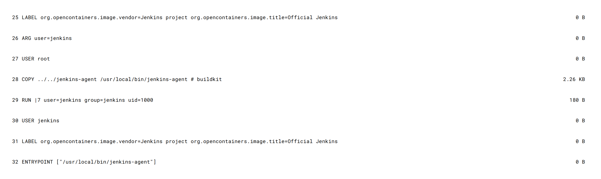
Above layers view shows the steps required to build the image and it also tells how big each layer is. That allows to calculate total size of the image.
For this tutorial most important will be the last step.
32 ENTRYPOINT ["/usr/local/bin/jenkins-agent"] 0 B
In a Dockerfile, the ENTRYPOINT instruction is used to define the command that will run as the container's main process (PID 1). This command is executed when the container starts. Unlike the CMD instruction, which can be overridden by command-line arguments provided at container runtime, the ENTRYPOINT instruction is designed to be the fixed executable of the container. If the ENTRYPOINT application requires arguments those arguments must be provided from docker run command or must be defined in docker compose file as command entry just like in docker-compose.
Let's assume our Jenkins Agent will run a bunch of tests on a Python project and for that we need:
We will extend jenkins/inbound-agent Docker file so it fulfills our requirements: https://github.com/codilime/Jenkins-Job-Manager/blob/main/docker/dockerfile-python-agent
FROM jenkins/inbound-agent:latest
USER root
# Install Python 3 and required tools
RUN apt-get update
RUN apt-get install -y python3.11 python3.11-dev python3.11-distutils python3-pip
RUN apt install -y python3-pytest python3-flake8 pylint python3-mypy
CMD /usr/bin/bash
USER jenkins
All the RUN instructions could be combined with &&, but in this case, I prefer to keep each RUN instruction separate. This approach makes it easier to remove a step or add something new, resulting in faster builds of the image. However, this also causes the image to grow in size, as each RUN instruction in a Dockerfile adds a new layer to the image. Docker images are composed of multiple layers, each representing a set of changes from the previous layer. More layers can lead to a larger overall image size, as each RUN command adds some overhead. In this case, I prioritize build speed and time. Note that this only matters if you are building the image for the first time or modifying it. Additionally, all instructions in our Dockerfile extend the IMAGE LAYERS shown in the picture of the jenkins/inbound-agent above. It is possible to see all layers and layer sizes with:
$ docker history -H <image-name>
To build a custom Docker file you can run below command:
$ docker build -t python-agent -f ./dockerfile-python-agent .
This logic will be later integrated in a docker-compose file which should simplify maintenance of the system.
If there is more than one docker container to be deployed and all container somehow depends on each other it is worth to configure all details in single docker-compose file. This is the example how to deploy a single container which runs Jenkins controller:
version: '3.8'
services:
jenkins-master:
image: jenkins/jenkins:lts
container_name: jenkins-master
ports:
- "8080:8080"
- "50000:50000"
volumes:
- jenkins_home:/var/jenkins_home
environment:
- JENKINS_OPTS=--prefix=/jenkins
restart: unless-stopped
volumes:
jenkins_home:
Here is short explanation of above docker-compose file:
To run docker-compose navigate to a location where docker compose file is and execute:
$ cd docker
$ docker compose up -d
This runs Jenkins controller container and you should be able to see such output with password required to unlock jenkins:
$ docker logs jenkins-controller
2024-04-10 20:33:01.117+0000 [id=80] INFO jenkins.install.SetupWizard#init:
*************************************************************
*************************************************************
*************************************************************
Jenkins initial setup is required. An admin user has been created and a password generated.
Please use the following password to proceed to installation:
XXXXXXXXXXXXXXXXXXXXXXXXXXXXXXXXXXXXXXXX <--- PASSWORD
This may also be found at: /var/jenkins_home/secrets/initialAdminPassword
*************************************************************
*************************************************************
*************************************************************
2024-04-10 20:33:23.841+0000 [id=80] INFO jenkins.InitReactorRunner$1#onAttained: Completed initialization
According to docker-compose configuration web UI interface should be accessible under http://localhost:8080/jenkins:
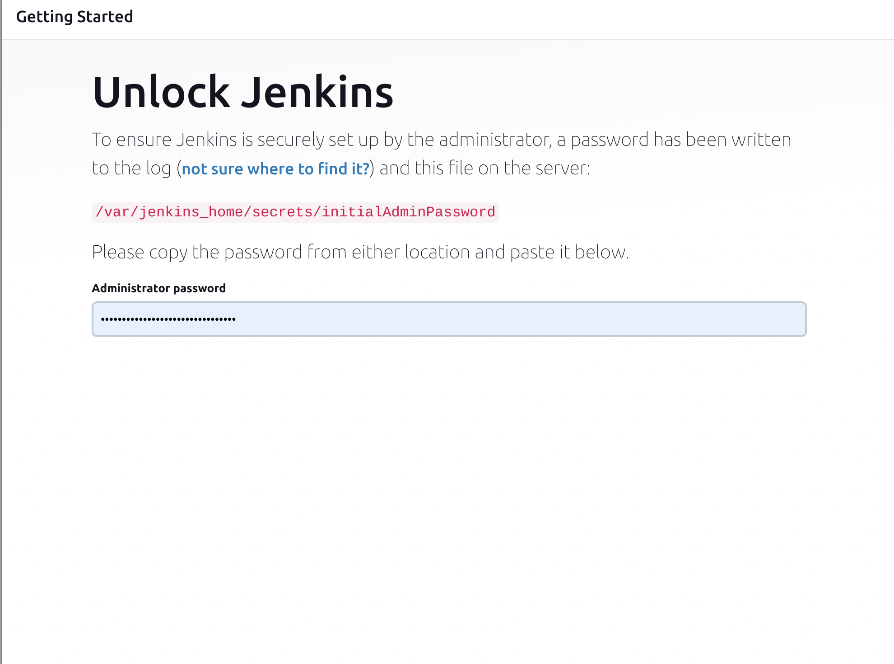
Provide password displayed after running docker compose up command.
There will be few more forms to fill:
After completing all steps above there should be an initial Dashoboard of Jenkins:
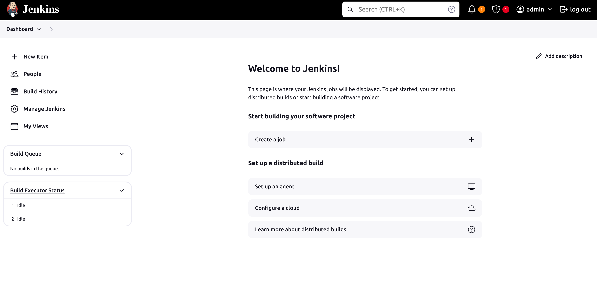
Jenkins Agents are responsible for executing build jobs and offloading work from the controller. You can define multiple Agents that can perform different tasks, but for this example, only one will be sufficient. The requirements and configuration of the Jenkins Agent Dockerfile for this project were described above: Agent configuration.
Adding an agent can be done with an API or the python-jenkins module, but it makes more sense to do it with the web UI as we need to obtain the so-called secret for the agent.
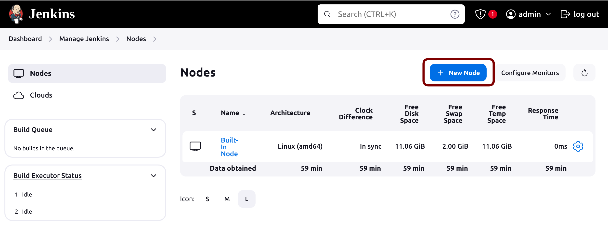
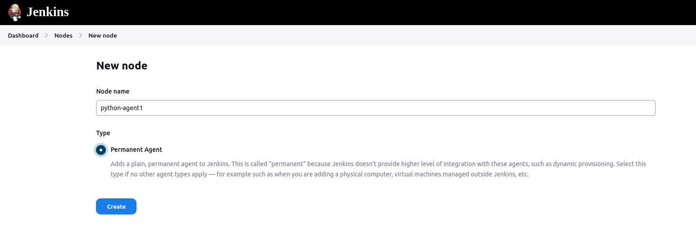
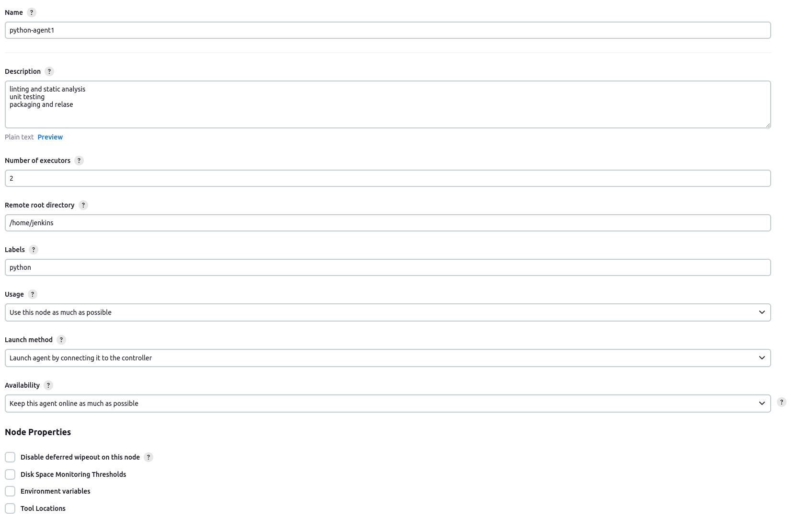
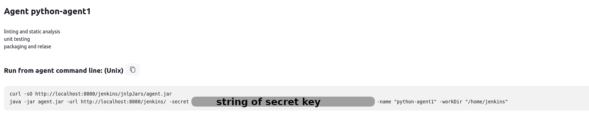
version: '3.8'
services:
jenkins-master:
# repo digest sha256:1fd79ceb68ce883fb86db70bdbf7f9eaa8b25e580aafe7a240235240396e3916 corresponds to tag 'lts' on 13.04.2024
image: jenkins/jenkins@sha256:1fd79ceb68ce883fb86db70bdbf7f9eaa8b25e580aafe7a240235240396e3916
container_name: jenkins-master
ports:
- "8080:8080"
- "50000:50000"
volumes:
- jenkins_home:/var/jenkins_home
environment:
- JENKINS_OPTS=--prefix=/jenkins
restart: unless-stopped
jenkins-agent:
container_name: jenkins-agent1
depends_on:
- jenkins-master
# build docker image from prepared dockerfile-python-agent
build:
context: .
dockerfile: dockerfile-python-agent
volumes:
- /var/run/docker.sock:/var/run/docker.sock
- jenkins_agent_home:/home/jenkins
command: -url http://jenkins-master:8080/jenkins <jenkins agent secret> python-agent1
tty: true
stdin_open: true
restart: unless-stopped
volumes:
jenkins_home:
jenkins_agent_home:
docker compose down command$ docker compose up
There will be prints labeled with container names defined in the compose file: jenkins-master and jenkins-agent. If everything was configured correctly, you should see agent1 is Connected.:
jenkins-master | 2024-04-13 13:43:55.641+0000 [id=133] INFO h.TcpSlaveAgentListener$ConnectionHandler#run: Accepted JNLP4-connect connection #2 from /172.27.0.3:43808
jenkins-agent1 | Apr 13, 2024 1:43:55 PM hudson.remoting.Launcher$CuiListener status
jenkins-agent1 | INFO: Remote identity confirmed: 3e:b3:b5:bc:81:75:7e:97:a7:3b:9c:67:d9:91:27:47
jenkins-agent1 | Apr 13, 2024 1:43:55 PM hudson.remoting.Launcher$CuiListener status
jenkins-agent1 | INFO: Connected
To have a better understanding how Jenkins runs jobs lets add some dummy Job. Later we will create a bunch of Python tools to automate such tasks.
OKRestrict where this project can be run.Add build step -> Execute shell as this is deployed on Linux
whoami
python3 -V
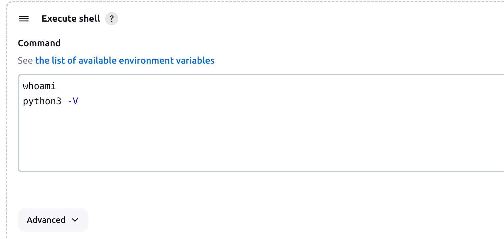
Started by user admin
Running as SYSTEM
Building remotely on python-agent1 (python) in workspace /home/jenkins/workspace/Dummy Job
[Dummy Job] $ /bin/sh -xe /tmp/jenkins10178526424899115512.sh
+ whoami
jenkins
+ python3 -V
Python 3.11.2
Finished: SUCCESS
That was first part which explains how to configure very basic setup of Jenkins with single worker. Next section demonstrates how Python can be used to configure and manage Jenkins setup.
Jenkins offers a rich set of functionalities via its REST API, allowing you to automate and interact with Jenkins programmatically. Here's a list of common actions you can perform over the Jenkins API:
In order to use API we will need get Jenkins API token https://www.jenkins.io/doc/book/managing/cli/#authentication but first we need to create an API user.
In order to create a user follow below steps:
Role-based Authorization Strategy plugin http://localhost:8080/jenkins/manage/pluginManager/available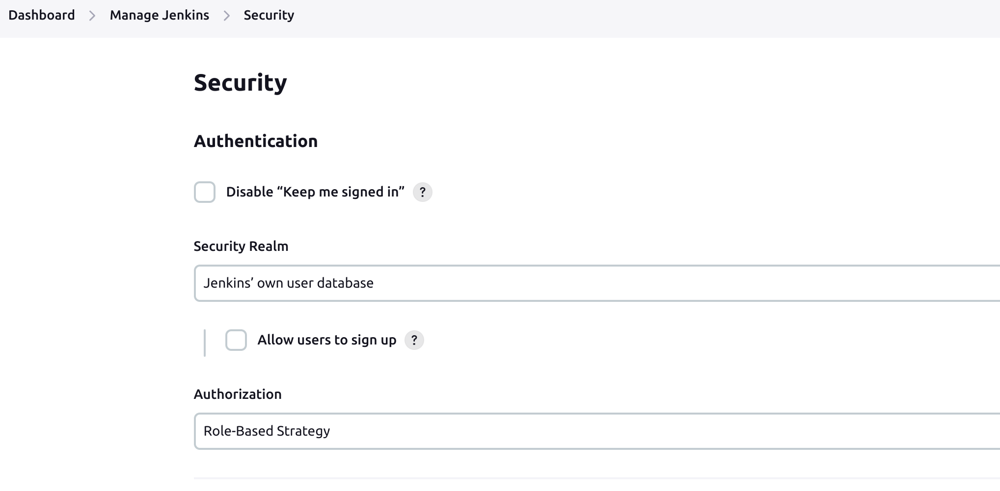
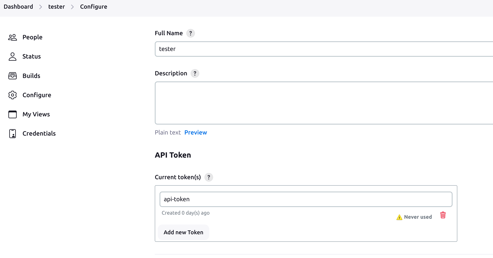
$HOME\.netrc on you machine (replace XXX with generated token):echo "machine localhost:8080 login tester password XXXXXXXXXXXXXXXXXXXXXXXXXXXXXXX" >> ~/.netrc
In this tutorial, we will focus on job creation, configuration, and reconfiguration. This can be very helpful if there is a large number of jobs to maintain. Very often, jobs share some common logic or depend on each other. Maintaining these dependencies is much easier if we apply a programmatic approach, such as using Python. I am going to use the python-jenkins module for this. It offers most of the features listed above.
pip install python-jenkins
Having all setup lets create first Job with use of Python and Jenkins API:
https://github.com/codilime/Jenkins-Job-Manager/blob/main/lib/jenkins_api.py
import netrc
import jenkins
def get_jenkins_server(jenkins_base_address: str = 'localhost:8080',
username: str = None,
api_token: str = None) -> jenkins.Jenkins:
"""
https://python-jenkins.readthedocs.io/en/latest/examples.html
"""
if not (username and api_token):
# Loading credentials from the .netrc file.
netrc_credentials = netrc.netrc()
jenkins_username, _, api_token = netrc_credentials.authenticators(jenkins_base_address)
jenkins_full_address = f'{jenkins_base_address}/jenkins'
jenkins_project_url = f'http://{jenkins_full_address}'
jenkins_server = jenkins.Jenkins(jenkins_project_url, jenkins_username, api_token)
return jenkins_server
main script
import jenkins
from pprint import pprint
import lib.jenkins_api as jenkins_api
server = jenkins_api.get_jenkins_server()
server.create_job('dummy job', jenkins.EMPTY_CONFIG_XML)
pprint(server.get_all_jobs())
this should print:
[{'_class': 'hudson.model.FreeStyleProject',
'color': 'notbuilt',
'fullname': 'dummy job',
'name': 'dummy job',
'url': 'http://localhost:8080/jenkins/job/dummy%20job/'}]
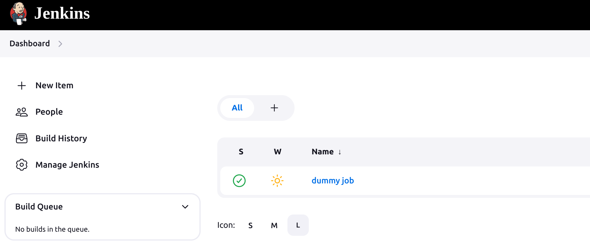
As we can see, the python-jenkins module uses the XML file jenkins.EMPTY_CONFIG_XML as a basis to configure projects. Any project created on Jenkins has its own config.xml file. Once we create a dummy job, we can check the content of the XML at the URL:
http://localhost:8080/jenkins/job/dummy%20job/config.xml
To discover what kind of XML pieces we need to build a job according to our requirements, we can create a draft job using the web UI interface and check the generated config.xml to see what is needed.
As shown earlier, we're using XML to manage our Jenkins setup. XML (eXtensible Markup Language) is a standard markup language for encoding documents in a structured, human-readable, and machine-readable way. It was designed to store and transport data, providing a flexible framework for representing data structures. While Python has an xml module for parsing XML files, a more user-friendly alternative xmltodict lets you treat XML as a dictionary, simplifying data handling:
pip install xmltodict
With this module, we can make Jenkins integration more Pythonic. I will demonstrate how to navigate an XML structure as if you're accessing object attributes, just like in most object-oriented programming languages.
In https://github.com/codilime/Jenkins-Job-Manager/blob/main/lib/xml_handler.py file are two classes which allows that kind of mechanism
class XmlHandler:
"""
Handle XML document like an OOP object
"""
def __init__(self, xml_data: str):
self._data = XmlElement(xmltodict.parse(xml_data))
@property
def data(self) -> XmlElement:
"""
@return: XmlElement of root
"""
return self._data
def unparse(self) -> str:
"""
@return: xml as string
"""
return xmltodict.unparse(self._data, pretty=True)
def __repr__(self):
return pformat(self._data)
class XmlElement(dict):
"""
Defines mechanism to access and modify dict keys as an object's attribute
"""
def __setattr__(self, key: str, value):
"""
Assign value to dict key by __setattr__
@param key: key
@param value: value
@return:
"""
if not key.startswith('_'):
self[key] = value
else:
super().__setattr__(key, value)
def __getattr__(self, item):
"""
Allow to get dict item with getattr method
@param item: dict key
@return: plain data or new XmlElement
"""
data = super().__getitem__(item)
if issubclass(type(data), dict):
xml_element = XmlElement(data)
super().__setitem__(item, xml_element) # reassign current element with new instance of XmlElement
return super().__getitem__(item)
def __getitem__(self, item):
"""
Override getitem so it will return new XmlElement if element is type of dict, reuse __getattr__ implementation
@param item:
@return:
"""
return self.__getattr__(item)
Lets see how it works. Here a default jenkins.EMPTY_CONFIG_XML used to create dummy job, the same is visible under http://localhost:8080/jenkins/job/Dummy%20Job/config.xml
<?xml version="1.0" encoding="UTF-8"?><project>
<keepDependencies>false</keepDependencies>
<properties/>
<scm class="jenkins.scm.NullSCM"/>
<canRoam>true</canRoam>
<disabled>false</disabled>
<blockBuildWhenUpstreamBuilding>false</blockBuildWhenUpstreamBuilding>
<triggers class="vector"/>
<concurrentBuild>false</concurrentBuild>
<builders/>
<publishers/>
<buildWrappers/>
</project>
<?xml version="1.0" encoding="utf-8"?>
Now lets make an XmlHandler object out of it:
import lib.jenkins_api as jenkins_api
import lib.xml_handler as xml_handler
server = jenkins_api.get_jenkins_server()
xml_data = server.get_job_config('dummy job')
xml_obj = xml_handler.XmlHandler(xml_data)
print(xml_obj)
As we expected we have the same structure in form of nice looking dictionary:
{'project': {'blockBuildWhenUpstreamBuilding': 'false',
'buildWrappers': None,
'builders': None,
'canRoam': 'true',
'concurrentBuild': 'false',
'disabled': 'false',
'keepDependencies': 'false',
'properties': None,
'publishers': None,
'scm': {'@class': 'jenkins.scm.NullSCM'},
'triggers': {'@class': 'vector'}}}
To show how to update jenkins job with demonstrated tools I am going to add description to the job:
import lib.jenkins_api as jenkins_api
import lib.xml_handler as xml_handler
server = jenkins_api.get_jenkins_server()
# Get dummy job config.xml
xml_data = server.get_job_config('dummy job')
xml_obj = xml_handler.XmlHandler(xml_data)
xml_data = xml_obj.data
# Adding description to job
xml_data.project.description = "This is dummy job for demonstration purposes"
# Adding new field 'properties' which stores ParametersDefinitionProperty
xml_data.project.properties = {
'hudson.model.ParametersDefinitionProperty':
{
'parameterDefinitions': {}
}
}
# Let's grab parameterDefinitions list context
parameter_definitions = xml_data.project.properties['hudson.model.ParametersDefinitionProperty'].parameterDefinitions
parameter_definitions['hudson.model.StringParameterDefinition'] = [] # for many parameters of the same type use list
# Adding new Job parameters
parameters = [
dict(name='parameter1', description='this is dummy parameter 1', default_value='0'),
dict(name='parameter2', description='this is dummy parameter 2', default_value='1'),
]
for parameter_dict in parameters:
parameter_definitions['hudson.model.StringParameterDefinition'].append(
# Jenkins XML element names must be camel case
xml_handler.keys_to_camel_case(**parameter_dict)
)
print(xml_obj.unparse())
server.reconfig_job('dummy job', config_xml=xml_obj.unparse())
This is how updated xml looks like with new description element and set of new string parameters
<?xml version="1.0" encoding="utf-8"?>
<project>
<actions></actions>
<description>This is dummy job for demonstration purposes</description>
<keepDependencies>false</keepDependencies>
<properties>
<hudson.model.ParametersDefinitionProperty>
<parameterDefinitions>
<hudson.model.StringParameterDefinition>
<name>parameter1</name>
<description>this is dummy parameter 1</description>
<defaultValue>0</defaultValue>
</hudson.model.StringParameterDefinition>
<hudson.model.StringParameterDefinition>
<name>parameter2</name>
<description>this is dummy parameter 2</description>
<defaultValue>1</defaultValue>
</hudson.model.StringParameterDefinition>
</parameterDefinitions>
</hudson.model.ParametersDefinitionProperty>
</properties>
<scm class="hudson.scm.NullSCM"></scm>
<canRoam>true</canRoam>
<disabled>false</disabled>
<blockBuildWhenDownstreamBuilding>false</blockBuildWhenDownstreamBuilding>
<blockBuildWhenUpstreamBuilding>false</blockBuildWhenUpstreamBuilding>
<triggers></triggers>
<concurrentBuild>false</concurrentBuild>
<builders></builders>
<publishers></publishers>
<buildWrappers></buildWrappers>
</project>
From Dummy Job view we can see that config was updated: http://localhost:8080/jenkins/job/Dummy%20Job/build
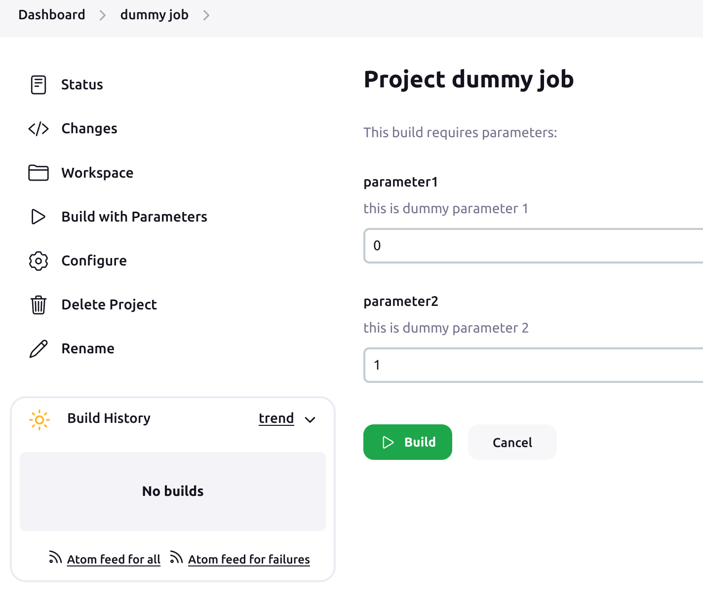
That was a showcase how can those tools can be used. Lets create something useful then. We can create new classes in Python now to create many different templates of different types of Jobs we need like:
We need to know how xml structure looks like for each item we want to create on Jenkins. You can create some example Item on Jenkins web-ui and see how config.xml looks like. Basically this is the simples way to create a single job. Examples and tools shown here are more practical when you want to manage bigger number of jobs.
In https://github.com/codilime/Jenkins-Job-Manager/blob/main/lib/job_manager.py file are defined template classes to create a Freestyle job but if course this is just single example how you can use this approach to create and manage your own kinds of Jobs.
Here is a short snippet which creates fully operational Job with few parameters. It also shows how can we simply render a shell script based of defined parameters:
import lib.jenkins_api as jenkins_api
import lib.job_manager as job_manager
server = jenkins_api.get_jenkins_server()
# Get 'dummy job' config.xml
xml_data = server.get_job_config('dummy job')
# Create freestyle job
freestyle_job = job_manager.FreestyleJob(description='new dummy job')
# Add string parameters to the job
parameter1 = 'Param1'
parameter2 = 'Param2'
freestyle_job.add_job_parameter(parameter1, description='first parameter', default_value='val1')
freestyle_job.add_job_parameter(parameter2, description='second parameter', default_value='val2')
# Add choices parameter
platform_parameter = 'platform'
freestyle_job.add_job_choices_parameter(platform_parameter, choices=['linux', 'windows'], description='choose platform')
# Add artifact archiver, collect log file produced by shell script below
freestyle_job.add_artifact_archiver('*.log')
# Define builder shell script
freestyle_job.add_builder_shell_script(
f'''
echo Selected platform: ${platform_parameter}
echo Executing job with parameters {parameter1}=${parameter1}, {parameter2}=${parameter2}
pip list | tee text.log
'''
)
server.reconfig_job('dummy job', config_xml=freestyle_job.unparse())
Now lets see how it looks:
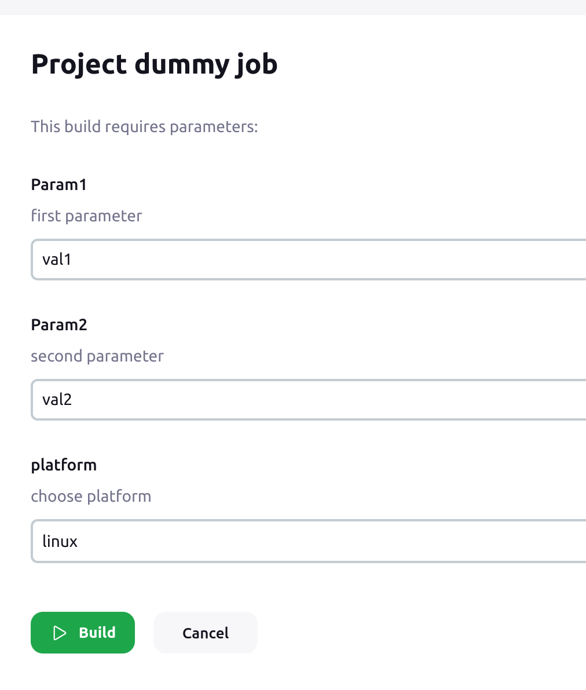
After building the Job here is how console output looks like:
Started by user unknown or anonymous
Running as SYSTEM
Building remotely on python-agent1 in workspace /home/jenkins/workspace/dummy job
[dummy job] $ /bin/sh -xe /tmp/jenkins6729820319219664139.sh
+ echo Selected platform: linux
Selected platform: linux
+ echo Executing job with parameters Param1=val1, Param2=val2
Executing job with parameters Param1=val1, Param2=val2
+ pip list
+ tee text.log
Package Version
------------------ ------------
astroid 2.14.2
attrs 22.2.0
...
As you can see all values were correctly placed in a shell script. There is also an artifact collected according to freestyle_job.add_artifact_archiver('*.log') expression which contains output of pip list command
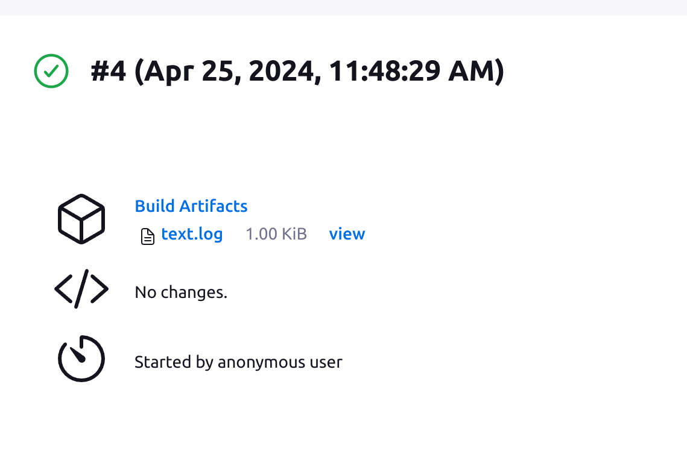
This is just a very basic showcase, but it gives an idea of how Python can be useful for managing any Jenkins project. This comes in handy if there are many different jobs or pipelines that are somehow related to each other. One job can run another job that requires specific parameters, or there can be pipelines defined that run different jobs with specific configurations. If there are dependencies between jobs, all logic can be expressed in Python. When the configuration requires an update or there is a need to add a new parameter, it is much easier to handle that in a Python script and simply run the update script to update every job. If the logic of a given Jenkins project is defined with a Python script, this can serve as a backup or a tool to deploy the same configuration on a different server without unnecessary manual work.
In this guide, we have covered the essential steps to set up and manage Jenkins using Docker. By leveraging Docker, we maintain a clean host system and benefit from isolated environments, making the deployment and management of Jenkins more efficient and reliable. We explored creating a Jenkins agent Docker image tailored for Python projects, setting up the Jenkins controller with Docker Compose, and connecting agents to the controller.
We also delved into managing Jenkins using Python, demonstrating how to automate and interact with Jenkins through its REST API and the python-jenkins module. This allows for efficient job creation, deletion, and reconfiguration, as well as other administrative tasks, highlighting the flexibility and power of combining Jenkins with Python.
This tutorial provides a comprehensive approach to setting up a robust CI/CD pipeline, showcasing the integration of Docker and Python to simplify and enhance Jenkins management. By following these steps, you can establish a scalable and maintainable Jenkins environment, ensuring a smooth and efficient development workflow.